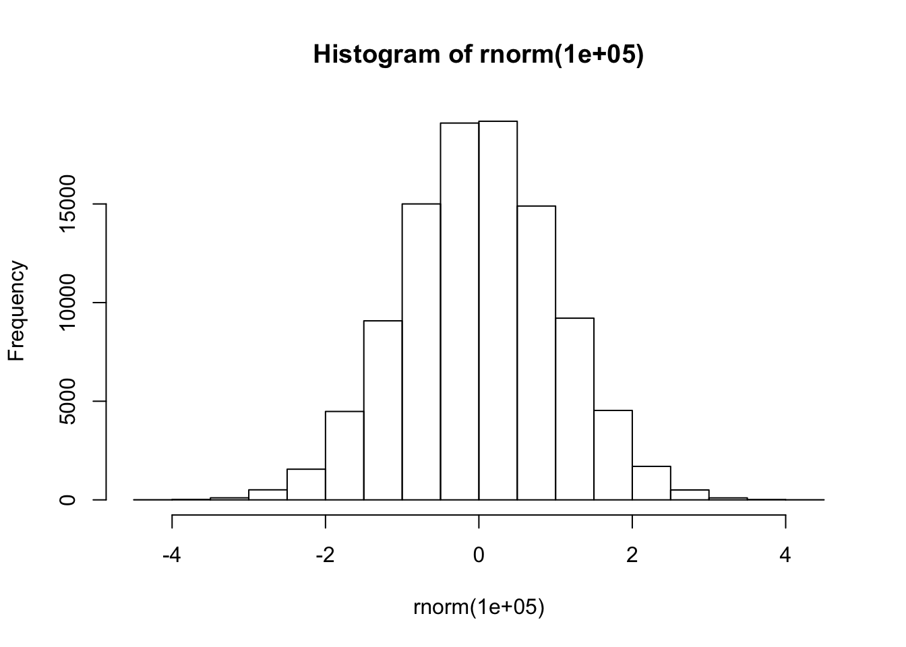

Intro To dplyr
2020-01-28
Chapter 1 R Data Structures
There are a number of data structures in R such as vectors, lists qnd matrices. The vector structure winds up being helpful in understanding how to work with data frames.
1.1 Vectors
It is a container for a series of related data of the same type: height measurements of students, whether a group of people smoke or not, their blood pressure. The only rule here is that a vector can contain only one data type at a time.
names <- c("P1","P2","P3","P4","P5")
temp <- c(98.2,101.3,97.2,100.2,98.5)
pulse <- c(66,72,83,85,90)
gender <- c("M","F","M","M","F")To access elements, or ranges of elements, within a vector involves using the “bracket” notation:
# Get the first element of temp
temp[1]## [1] 98.2# Get elements 3,4, and 5 from pulse
pulse[3:5]## [1] 83 85 90Base R likes to use the the composite function style. Not surprising since the language was written by statisticians. Create some vectors
# create a sequence of numbers
# looks like f(x)
seq(0,16,4)## [1] 0 4 8 12 16# looks like f(g(x))
str(seq(0,16,4))## num [1:5] 0 4 8 12 16# create some numbers from a Normal distributions
rnorm(10)## [1] -1.5080448 1.1984941 -0.2408286 -0.3006668 -2.2184947 0.3325012
## [7] -0.5955770 -0.6163712 -1.0431323 1.2738414# Looks like f(g(x))
hist(rnorm(100000))
# You kind of know what you want to do before you type it
# What about this ?
rnorm(100000) %>% hist()
We can also use logical expressions to find elements that satisfy some condition. This is a very powerful capability in R.
temp < 98## [1] FALSE FALSE TRUE FALSE FALSEWhoa. What was that ? Well we get back a T/F logical vector that tells us what elements satisfy the specified condition. We can then use this info to get the elements of interest.
temp[temp < 98]## [1] 97.2Working with individual vectors is fine but a more general way of working with them is in data frames which provides more fleibility:
(my_df <- data.frame(names,temp,pulse,gender)) ## names temp pulse gender
## 1 P1 98.2 66 M
## 2 P2 101.3 72 F
## 3 P3 97.2 83 M
## 4 P4 100.2 85 M
## 5 P5 98.5 90 FLooking at each column, we see that they are the vectors we were just working with. If we need to access them from the data frame it’s easy.
# Get the temp column
my_df$temp## [1] 98.2 101.3 97.2 100.2 98.5# What's the mean of the temp column
mean(my_df$temp)## [1] 99.081.2 Data Frames

But we are getting ahead of ourselves. Just know that the premier data structure in R is the data.frame. This structure can be described as follows:
A data frame is a special type of list that contains data in a format that allows for easier manipulation, reshaping, and open-ended analysis
Data frames are tightly coupled collections of variables. It is one of the more important constructs you will encounter when using R so learn all you can about it
A data frame is an analogue to the Excel spreadsheet but is much more flexible for storing, manipulating, and analyzing data
Data frames can be constructed from existing vectors, lists, or matrices. Many times they are created by reading in comma delimited files, (CSV files), using the read.table command
Once you become accustomed to working with data frames, R becomes so much easier to use. In fact, it could be well argued tht UNTIL you wrap your head around the data frame concept then you cannot be productive in R. This is mostly true, in my experience.
R comes with with a variety of built-in data sets that are very useful for getting used to data sets and how to manipulate them.
AirPassengers Monthly Airline Passenger Numbers 1949-1960
BJsales Sales Data with Leading Indicator
BOD Biochemical Oxygen Demand
CO2 Carbon Dioxide Uptake in Grass Plants
ChickWeight Weight versus age of chicks on different diets
DNase Elisa assay of DNase
Formaldehyde Determination of Formaldehyde
HairEyeColor Hair and Eye Color of Statistics Students
Harman23.cor Harman Example 2.3
Harman74.cor Harman Example 7.4
Indometh Pharmacokinetics of Indomethacin
InsectSprays Effectiveness of Insect Sprays
JohnsonJohnson Quarterly Earnings per Johnson & Johnson Share
LakeHuron Level of Lake Huron 1875-1972
LifeCycleSavings Intercountry Life-Cycle Savings Data
Loblolly Growth of Loblolly pine trees
Nile Flow of the River Nile
Orange Growth of Orange Trees
OrchardSprays Potency of Orchard Sprays
PlantGrowth Results from an Experiment on Plant Growth
Puromycin Reaction Velocity of an Enzymatic Reaction
Theoph Pharmacokinetics of Theophylline1.3 A Reference Data Frame
We will use a well-known data frame, at least in R circles, called mtcars which is part of any default installation of R. It is a simple data set relating to, well, automobiles. This data frame has the distinction of being the most (ab)used data frame in R education.
The data was extracted from the 1974 Motor Trend US
magazine, and comprises fuel consumption and 10 aspects
of automobile design and performance for 32 automobiles
(1973–74 models).
A data frame with 32 observations on 11 (numeric)
variables.
[, 1] mpg Miles/(US) gallon
[, 2] cyl Number of cylinders
[, 3] disp Displacement (cu.in.)
[, 4] hp Gross horsepower
[, 5] drat Rear axle ratio
[, 6] wt Weight (1000 lbs)
[, 7] qsec 1/4 mile time
[, 8] vs Engine (0 = V-shaped, 1 = straight)
[, 9] am Transmission (0 = automatic, 1 = manual)
[,10] gear Number of forward gears
[,11] carb Number of carburetors1.4 Relation to dplyr
What you will discover is that the dplyr package, which itself is part of the much larger tidyverse package set , extends upon the idea of the basic R data frame in a way that some feel is superior. It depends on your point of view though the tidyverse has a lot of what I call a philosophic consistency in it which makes it very useful once you get some concepts in mind.
While you could start exclusively with dplyr and the tidyverse the world is still full of older code. Plus, many of the advantages of dplyr only become quite apparent when compared to the “older way” of doing things. So my recommendation is to know how to deal with data frames in base R while also spending time to learn the dplyr way of doing things.